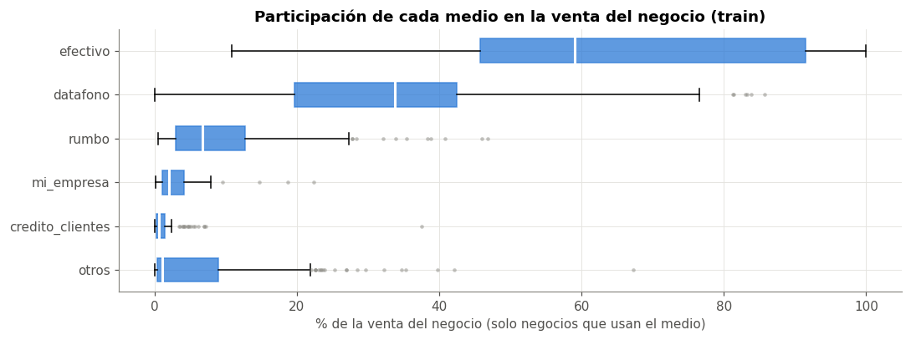
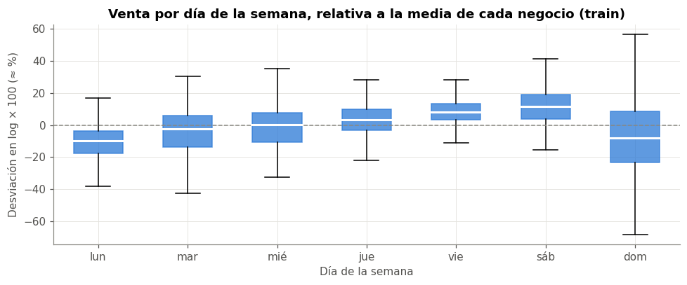
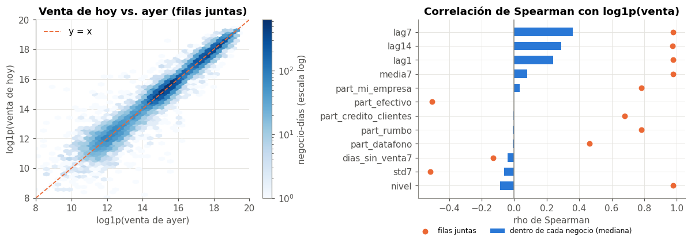
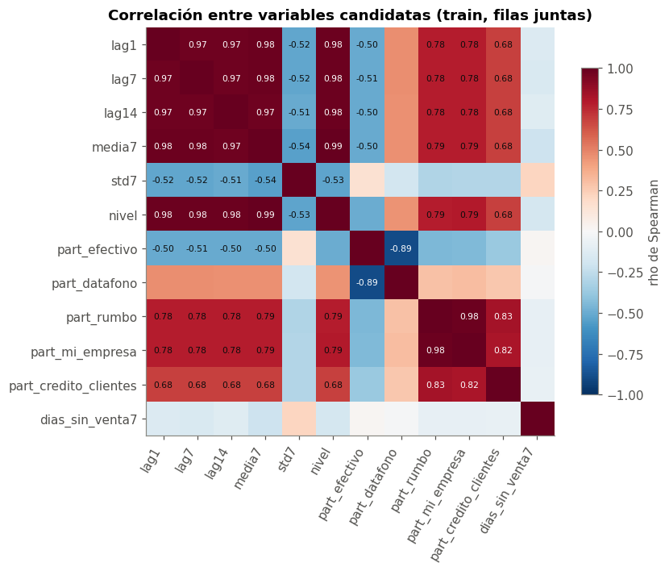

🔎 4. EDA univariado, bivariado y multivariado#
Este capítulo explora las variables candidatas y su relación con el objetivo, solo con train (1 jul – 2 sep). El componente temporal (autocorrelación, estacionariedad, deriva, festivos) se analiza en el capítulo 6.
Nota
Unidad de análisis para las pruebas. Las filas de un mismo negocio no son independientes (cap. 1). Por eso las pruebas de hipótesis se hacen a nivel de negocio: primero se resume cada negocio y luego se compara entre negocios, con \(n \approx 450\) y no \(n \approx 28\,000\). Hacer las pruebas fila a fila daría p-valores artificialmente pequeños.
Para cada familia de pruebas se reporta el tamaño del efecto y los p-valores se corrigen por comparaciones múltiples con Holm, que controla la probabilidad de al menos un falso positivo en la familia y es menos conservador que Bonferroni.
import numpy as np
import pandas as pd
import matplotlib.pyplot as plt
from scipy import stats
from statsmodels.stats.multitest import multipletests
from statsmodels.stats.outliers_influence import variance_inflation_factor
from comun import (estilo, cargar_panel, crear_variables, CORTE, AZUL, NARANJA, GRIS, PALETA, DIAS,
MEDIOS, VARIABLES_NUM, formato_p)
estilo()
SEED = 42
panel = cargar_panel()
train = panel[panel["fecha"] <= CORTE].copy()
train["y_log"] = np.log1p(train["venta_total"].clip(lower=0))
print(f"train: {len(train):,} filas, {train['negocio'].nunique()} negocios")
train: 28,469 filas, 448 negocios
📊 4.1 Univariado: medios de pago#
La distribución del objetivo ya se analizó en el capítulo 3. Aquí se miran los medios de pago, que entrarán como rezagos: qué tan seguido se usan y cuánto pesan en la venta de cada negocio.
# [IA] resumen por medio: frecuencia de uso, monto típico y peso en el negocio
pm_cols = [f"pm_{m}" for m in MEDIOS] + ["pm_otros"]
filas = []
for c in pm_cols:
v = train[c]
usa = train.groupby("negocio")[c].sum() > 0
part = (train.groupby("negocio")[c].sum() / train.groupby("negocio")["venta_total"].sum())[usa]
filas.append({
"medio": c.replace("pm_", ""),
"% negocio-días > 0": (v > 0).mean() * 100,
"negocios que lo usan": usa.sum(),
"mediana cuando > 0 (miles COP)": v[v > 0].median() / 1e3,
"asimetría log1p (> 0)": stats.skew(np.log1p(v[v > 0])),
"participación mediana en su negocio (%)": part.median() * 100,
})
uni = pd.DataFrame(filas).set_index("medio")
uni
| % negocio-días > 0 | negocios que lo usan | mediana cuando > 0 (miles COP) | asimetría log1p (> 0) | participación mediana en su negocio (%) | |
|---|---|---|---|---|---|
| medio | |||||
| efectivo | 99.22 | 447 | 3,422.53 | -0.50 | 59.02 |
| datafono | 77.74 | 368 | 2,529.89 | -0.14 | 33.73 |
| rumbo | 32.08 | 144 | 3,019.17 | -0.22 | 6.75 |
| mi_empresa | 30.25 | 145 | 929.00 | -0.06 | 2.03 |
| credito_clientes | 18.76 | 126 | 506.84 | 0.14 | 0.66 |
| otros | 63.57 | 316 | 271.17 | -0.49 | 1.07 |
# participación de cada medio por negocio (solo negocios que lo usan)
part_neg = train.groupby("negocio")[pm_cols].sum().div(train.groupby("negocio")["venta_total"].sum(), axis=0)
fig, ax = plt.subplots(figsize=(10, 3.8))
datos = [part_neg.loc[part_neg[c] > 0, c].clip(0, 1) * 100 for c in pm_cols]
bp = ax.boxplot(datos, vert=False, labels=[c.replace("pm_", "") for c in pm_cols], patch_artist=True,
widths=0.55, flierprops=dict(marker="o", markersize=3, markerfacecolor=GRIS, markeredgecolor="none", alpha=0.5))
for b in bp["boxes"]:
b.set(facecolor=AZUL, alpha=0.75, edgecolor=AZUL)
for m in bp["medians"]:
m.set(color="white", linewidth=2)
ax.set_title("Participación de cada medio en la venta del negocio (train)")
ax.set_xlabel("% de la venta del negocio (solo negocios que usan el medio)")
ax.invert_yaxis()
plt.tight_layout()
plt.show()

Interpretación#
Efectivo aparece en 447 de 448 negocios y en el 99 % de los negocio-días. Es la base de la venta (mediana del 59 % del negocio), con mucha dispersión: hay negocios donde es casi el 100 %.
Datáfono lo usan 368 negocios y pesa típicamente un tercio de la venta.
Rumbo y Mi Empresa (créditos corporativos) solo aparecen en unos 145 negocios, casi siempre los mismos, y con participaciones moderadas (medianas de 7 % y 2 %). En algunos negocios Rumbo llega a más del 40 %.
Crédito clientes y otros pesan muy poco (medianas del 1 % o menos), aunque «otros» aparece en el 64 % de los negocio-días.
En los negocios que los usan, los montos por medio en log1p son casi simétricos (asimetría entre −0,5 y 0,14).
Decisión → el mix de medios describe el tipo de negocio mejor que los montos por medio, que ya están contenidos en el total. Por eso los medios entran al modelo como participación en los 7 días anteriores (part_*), y no como montos, que serían casi colineales con los rezagos del total (ver 4.3).
🔗 4.2 Bivariado#
a) Venta vs. día de la semana#
Para quitar el efecto de tamaño, a cada negocio se le resta su propia media en log. Así queda la desviación relativa de cada día de la semana respecto a lo normal para ese negocio. Como cada negocio aporta los 7 días, es un diseño de medidas repetidas: se usa la prueba de Friedman con la W de Kendall como tamaño del efecto. Después se hacen las 21 comparaciones por pares con Wilcoxon pareado y corrección de Holm.
# [IA] perfil semanal por negocio: media de log por día de semana menos la media del negocio
pos = train[train["venta_total"] > 0].copy()
pos["dia"] = pos["fecha"].dt.dayofweek
perfil = pos.groupby(["negocio", "dia"])["y_log"].mean().unstack()
perfil = perfil.dropna() # solo negocios con los 7 días observados
perfil = perfil.sub(perfil.mean(axis=1), axis=0)
chi2, p_fr = stats.friedmanchisquare(*[perfil[d] for d in range(7)])
n_neg, k = perfil.shape
W = chi2 / (n_neg * (k - 1))
print(f"Friedman: chi2 = {chi2:,.1f}, p = {p_fr:.1e}, n = {n_neg} negocios, W de Kendall = {W:.3f}")
efecto = (np.expm1(perfil.median()) * 100).rename("mediana (% vs. la media del negocio)")
efecto.index = DIAS
efecto.to_frame().T
Friedman: chi2 = 738.7, p = 2.6e-156, n = 445 negocios, W de Kendall = 0.277
| lun | mar | mié | jue | vie | sáb | dom | |
|---|---|---|---|---|---|---|---|
| mediana (% vs. la media del negocio) | -9.36 | -2.27 | 0.21 | 3.14 | 8.28 | 12.22 | -7.78 |
# [IA] comparaciones por pares con Wilcoxon pareado + Holm; efecto = correlación biserial por rangos
pares = []
for i in range(7):
for j in range(i + 1, 7):
dif = perfil[i] - perfil[j]
res = stats.wilcoxon(dif)
rango = stats.rankdata(np.abs(dif))
r_rb = (rango[dif > 0].sum() - rango[dif < 0].sum()) / rango.sum()
pares.append((DIAS[i], DIAS[j], np.median(dif), r_rb, res.pvalue))
pares = pd.DataFrame(pares, columns=["día A", "día B", "dif. mediana (log)", "r biserial", "p"])
pares["p Holm"] = multipletests(pares["p"], method="holm")[1]
pares["significativo"] = pares["p Holm"] < 0.05
print(f"pares significativos tras Holm: {pares['significativo'].sum()} de {len(pares)}")
formato_p(pares.sort_values("r biserial", key=np.abs, ascending=False)).head(10)
pares significativos tras Holm: 19 de 21
| día A | día B | dif. mediana (log) | r biserial | p | p Holm | significativo | |
|---|---|---|---|---|---|---|---|
| 4 | lun | sáb | -0.21 | -0.90 | 4.6e-61 | 9.7e-60 | True |
| 3 | lun | vie | -0.17 | -0.89 | 8.3e-60 | 1.7e-58 | True |
| 20 | sáb | dom | 0.20 | 0.77 | 1.9e-44 | 3.5e-43 | True |
| 2 | lun | jue | -0.14 | -0.73 | 1.3e-40 | 2.3e-39 | True |
| 8 | mar | vie | -0.09 | -0.68 | 6.6e-36 | 1.1e-34 | True |
| 7 | mar | jue | -0.05 | -0.68 | 7.7e-36 | 1.2e-34 | True |
| 9 | mar | sáb | -0.13 | -0.68 | 1.5e-35 | 2.3e-34 | True |
| 12 | mié | vie | -0.06 | -0.61 | 6.0e-29 | 8.4e-28 | True |
| 19 | vie | dom | 0.16 | 0.60 | 8.0e-28 | 1.0e-26 | True |
| 13 | mié | sáb | -0.10 | -0.59 | 3.2e-27 | 3.8e-26 | True |
fig, ax = plt.subplots(figsize=(9, 3.8))
bp = ax.boxplot([perfil[d] * 100 for d in range(7)], labels=DIAS, patch_artist=True, widths=0.55, showfliers=False)
for b in bp["boxes"]:
b.set(facecolor=AZUL, alpha=0.75, edgecolor=AZUL)
for m in bp["medians"]:
m.set(color="white", linewidth=2)
ax.axhline(0, color=GRIS, lw=1, ls="--")
ax.set_title("Venta por día de la semana, relativa a la media de cada negocio (train)")
ax.set_ylabel("Desviación en log × 100 (≈ %)")
ax.set_xlabel("Día de la semana")
plt.tight_layout()
plt.show()

Interpretación#
El patrón semanal es claro: la prueba de Friedman rechaza con mucha fuerza que todos los días sean iguales (\(p \approx 10^{-156}\), 445 negocios). La W de Kendall = 0,28 indica una concordancia moderada: la mayoría de negocios comparte el mismo orden de días, pero no todos (0 = ningún acuerdo, 1 = todos iguales).
El lunes (−9 %) y el domingo (−8 %) son los días más bajos respecto a la media de cada negocio. El sábado (+12 %) y el viernes (+8 %) son los más altos.
19 de los 21 pares de días difieren después de Holm. Los efectos más grandes son lunes contra sábado y viernes (\(r \approx 0{,}9\): en casi todos los negocios el sábado supera al lunes).
La muestra del 16 al 24 sep sugería que el domingo era el día más bajo. Con todo train, el lunes y el domingo quedan prácticamente empatados.
Decisión → el día de la semana del día a pronosticar entra como variable categórica (one-hot), y se incluyen el rezago de 7 días y el ingenuo estacional como línea base (cap. 6 y 8).
b) Venta vs. rezagos (relación dentro de cada negocio)#
La correlación entre la venta de hoy y la de ayer, calculada con todas las filas juntas, sería altísima solo porque los negocios grandes venden mucho todos los días. Para medir la relación dentro de cada negocio, se calcula la correlación de Spearman negocio por negocio y se resume su distribución. La prueba es un Wilcoxon de una muestra sobre las correlaciones, con Holm entre las variables.
# [IA] Spearman dentro de cada negocio entre y_log y cada rezago/ventana
var = crear_variables(panel)
var_tr = var[(var["fecha"] <= CORTE) & var["lag14"].notna() & (var["venta_total"] > 0)]
candidatas = ["lag1", "lag7", "lag14", "media7", "std7", "nivel", "dias_sin_venta7"] + [f"part_{m}" for m in MEDIOS]
filas = []
for c in candidatas:
rhos = var_tr.groupby("negocio").apply(
lambda d: stats.spearmanr(d["y_log"], d[c]).correlation if d[c].nunique() > 1 else np.nan).dropna()
filas.append((c, rhos.median(), rhos.quantile(0.25), rhos.quantile(0.75), len(rhos), stats.wilcoxon(rhos).pvalue))
corr_intra = pd.DataFrame(filas, columns=["variable", "rho mediana", "p25", "p75", "negocios", "p"]).set_index("variable")
corr_intra["p Holm"] = multipletests(corr_intra["p"], method="holm")[1]
# comparación: la misma correlación con todas las filas juntas
corr_intra["rho con filas juntas"] = [stats.spearmanr(var_tr["y_log"], var_tr[c], nan_policy="omit").correlation for c in candidatas]
formato_p(corr_intra.sort_values("rho mediana", ascending=False))
| rho mediana | p25 | p75 | negocios | p | p Holm | rho con filas juntas | |
|---|---|---|---|---|---|---|---|
| variable | |||||||
| lag7 | 0.36 | 0.20 | 0.49 | 447 | 1.5e-70 | 1.8e-69 | 0.98 |
| lag14 | 0.29 | 0.15 | 0.44 | 447 | 2.8e-67 | 3.0e-66 | 0.97 |
| lag1 | 0.24 | 0.11 | 0.36 | 447 | 6.3e-64 | 6.3e-63 | 0.98 |
| media7 | 0.08 | -0.03 | 0.20 | 447 | 8.0e-22 | 7.2e-21 | 0.98 |
| part_mi_empresa | 0.04 | -0.08 | 0.14 | 145 | 2.5e-02 | 1.5e-01 | 0.78 |
| part_efectivo | 0.00 | -0.11 | 0.11 | 386 | 9.7e-01 | 1.0e+00 | -0.50 |
| part_credito_clientes | -0.00 | -0.11 | 0.13 | 124 | 9.7e-01 | 1.0e+00 | 0.68 |
| part_rumbo | -0.01 | -0.13 | 0.11 | 144 | 5.6e-01 | 1.0e+00 | 0.78 |
| part_datafono | -0.01 | -0.11 | 0.11 | 367 | 7.0e-01 | 1.0e+00 | 0.46 |
| dias_sin_venta7 | -0.04 | -0.23 | 0.03 | 35 | 7.3e-02 | 3.6e-01 | -0.13 |
| std7 | -0.06 | -0.19 | 0.05 | 447 | 6.9e-12 | 5.5e-11 | -0.51 |
| nivel | -0.09 | -0.20 | 0.07 | 447 | 4.8e-11 | 3.4e-10 | 0.98 |
fig, axes = plt.subplots(1, 2, figsize=(11, 4))
ax = axes[0]
hb = ax.hexbin(var_tr["lag1"], var_tr["y_log"], gridsize=60, cmap="Blues", mincnt=1, bins="log")
ax.plot([8, 20], [8, 20], color=NARANJA, lw=1.2, ls="--", label="y = x")
ax.set_xlim(8, 20); ax.set_ylim(8, 20)
ax.set_title("Venta de hoy vs. ayer (filas juntas)")
ax.set_xlabel("log1p(venta de ayer)")
ax.set_ylabel("log1p(venta de hoy)")
ax.legend(frameon=False, loc="upper left")
fig.colorbar(hb, ax=ax, label="negocio-días (escala log)")
ax = axes[1]
orden = corr_intra.sort_values("rho mediana").index
ax.barh(orden, corr_intra.loc[orden, "rho mediana"], color=AZUL, height=0.6, label="dentro de cada negocio (mediana)")
ax.scatter(corr_intra.loc[orden, "rho con filas juntas"], orden, color=NARANJA, s=30, zorder=3, label="filas juntas")
ax.axvline(0, color=GRIS, lw=1)
ax.set_title("Correlación de Spearman con log1p(venta)")
ax.set_xlabel("rho de Spearman")
ax.legend(frameon=False, loc="upper center", bbox_to_anchor=(0.4, -0.13), ncol=2, fontsize=8)
plt.tight_layout()
plt.show()

Interpretación#
Con las filas juntas, casi cualquier variable de nivel (rezagos, media de 7 días, nivel histórico) tiene correlación cercana a 1: es la diferencia de tamaño entre negocios, no capacidad de pronóstico. Es el mismo efecto que inflará el R² en el capítulo 8.
Dentro de cada negocio las correlaciones son modestas. La más fuerte es la del rezago de 7 días (mediana \(\rho = 0{,}36\)), seguida del rezago 14 (0,29) y del rezago 1 (0,24). Es coherente con el patrón semanal: el mismo día de la semana pasada se parece más a hoy que ayer.
La media de 7 días casi no se relaciona dentro del negocio (0,08): al promediar la semana completa se borra el patrón semanal. El nivel histórico (media desde el inicio) tiene correlación ligeramente negativa: reacciona lento y queda desfasado en los negocios que cambian de nivel (cap. 6.4). Aun así, ambas variables sirven para ubicar al negocio en su escala.
Las participaciones de los medios no se relacionan con la venta dentro del negocio (ninguna es significativa tras Holm), porque su mix cambia poco día a día. Pero sí distinguen negocios entre sí (siguiente prueba).
Decisión → se usan los rezagos 1, 7 y 14 (señal dentro del negocio), y la media, la desviación de 7 días y el nivel histórico (escala y volatilidad del negocio). El R² se reporta también dentro de cada negocio (cap. 8), porque el R² con las filas juntas engaña.
c) Mix de medios vs. tamaño del negocio (entre negocios)#
A nivel de negocio (\(n \approx 450\)): ¿los negocios grandes tienen un mix de medios distinto? Se usa Spearman entre la venta media (log) y la participación de cada medio, con Holm sobre las 6 pruebas.
tam = train.groupby("negocio")["y_log"].mean()
filas = []
for c in pm_cols:
r = stats.spearmanr(tam, part_neg[c].clip(-1, 2))
filas.append((c.replace("pm_", ""), r.correlation, r.pvalue))
mix = pd.DataFrame(filas, columns=["medio", "rho con tamaño", "p"]).set_index("medio")
mix["p Holm"] = multipletests(mix["p"], method="holm")[1]
mix["magnitud"] = pd.cut(mix["rho con tamaño"].abs(), [0, 0.1, 0.3, 0.5, 1], labels=["despreciable", "pequeña", "moderada", "grande"])
formato_p(mix)
| rho con tamaño | p | p Holm | magnitud | |
|---|---|---|---|---|
| medio | ||||
| efectivo | -0.50 | 2.8e-30 | 8.5e-30 | grande |
| datafono | 0.46 | 3.6e-25 | 7.1e-25 | moderada |
| rumbo | 0.79 | 4.5e-95 | 2.2e-94 | grande |
| mi_empresa | 0.79 | 1.3e-95 | 8.0e-95 | grande |
| credito_clientes | 0.72 | 4.5e-74 | 1.8e-73 | grande |
| otros | 0.14 | 4.2e-03 | 4.2e-03 | pequeña |
Interpretación#
El mix de medios está muy asociado al tamaño del negocio. Los negocios grandes, probablemente EDS, usan más los créditos corporativos (Rumbo y Mi Empresa, \(\rho \approx 0{,}79\)) y el crédito a clientes (0,72), y en los pequeños pesa más el efectivo (\(\rho = -0{,}50\)). Para la magnitud se usan los umbrales convencionales de Cohen para correlaciones (0,1 / 0,3 / 0,5).
Decisión → las participaciones part_* ayudan al modelo global a «reconocer» qué tipo de negocio está pronosticando, que es justo la variable que la base no trae (cap. 1).
🕸️ 4.3 Multivariado: redundancia entre variables candidatas#
Un modelo lineal sufre cuando las variables son casi combinaciones lineales unas de otras: los coeficientes se vuelven inestables y difíciles de interpretar. Se revisa la matriz de correlaciones (Spearman) y el factor de inflación de la varianza (VIF) de las variables candidatas en train.
X = var_tr[VARIABLES_NUM].drop(columns="festivo").dropna()
corr = X.corr(method="spearman")
fig, ax = plt.subplots(figsize=(8, 6.5))
im = ax.imshow(corr, cmap="RdBu_r", vmin=-1, vmax=1)
ax.set_xticks(range(len(corr))); ax.set_xticklabels(corr.columns, rotation=60, ha="right")
ax.set_yticks(range(len(corr))); ax.set_yticklabels(corr.columns)
ax.grid(False)
for i in range(len(corr)):
for j in range(len(corr)):
if abs(corr.iloc[i, j]) >= 0.5 and i != j:
ax.text(j, i, f"{corr.iloc[i, j]:.2f}", ha="center", va="center", fontsize=7,
color="white" if abs(corr.iloc[i, j]) > 0.8 else "#0b0b0b")
fig.colorbar(im, ax=ax, label="rho de Spearman", shrink=0.8)
ax.set_title("Correlación entre variables candidatas (train, filas juntas)")
plt.tight_layout()
plt.show()

# [IA] VIF: cuánto se infla la varianza de cada coeficiente por la colinealidad
Xs = (X - X.mean()) / X.std()
Xs = Xs.assign(const=1.0)
vif = pd.Series([variance_inflation_factor(Xs.values, i) for i in range(Xs.shape[1] - 1)],
index=X.columns, name="VIF").sort_values(ascending=False)
vif.to_frame().assign(alerta=lambda d: np.where(d["VIF"] > 10, "alta (> 10)", np.where(d["VIF"] > 5, "moderada (5-10)", "")))
| VIF | alerta | |
|---|---|---|
| media7 | 54.00 | alta (> 10) |
| nivel | 37.55 | alta (> 10) |
| part_efectivo | 12.18 | alta (> 10) |
| part_datafono | 10.97 | alta (> 10) |
| lag7 | 9.45 | moderada (5-10) |
| lag1 | 9.34 | moderada (5-10) |
| lag14 | 7.80 | moderada (5-10) |
| dias_sin_venta7 | 4.52 | |
| std7 | 4.48 | |
| part_rumbo | 3.74 | |
| part_mi_empresa | 2.63 | |
| part_credito_clientes | 1.20 |
Interpretación#
Las variables de nivel (rezagos 1, 7 y 14, media de 7 días y nivel histórico) están muy correlacionadas entre sí y tienen VIF altos. Es esperable: todas miden «cuánto vende normalmente este negocio». Las participaciones de medios también se relacionan entre sí, porque suman casi 1.
Decisiones →
Hallazgo |
Decisión |
|---|---|
Colinealidad fuerte entre variables de nivel |
Se mantienen porque aportan información distinta dentro del negocio (4.2 b), pero se usa regularización (el parámetro \(C\) del SVR, afinado con validación cruzada) y estandarización para que los coeficientes sean comparables |
Coeficientes inestables con VIF alto |
Los coeficientes del capítulo 8 se interpretan por grupos (nivel, semana, mix) y no uno por uno |
|
Se excluye y solo entran 5 participaciones |
✅ Resumen del capítulo#
# |
Hallazgo |
Evidencia |
Decisión de modelado |
|---|---|---|---|
1 |
Patrón semanal fuerte: lunes y domingo bajos, viernes y sábado altos (W = 0,28) |
Friedman, W de Kendall, Wilcoxon + Holm |
Día de la semana (one-hot) + rezago 7 + línea base estacional |
2 |
La correlación con filas juntas la domina el tamaño del negocio |
\(\rho\) con filas juntas ≈ 1 vs. \(\rho\) dentro del negocio moderado |
Reportar el R² dentro del negocio. Sospechar de R² altos |
3 |
Dentro del negocio, el rezago 7 es el mejor predictor (ρ = 0,36), por encima del rezago 1 |
Spearman dentro de cada negocio + Holm |
Rezagos 1, 7, 14 + media, desviación de 7 días y nivel |
4 |
El mix de medios distingue tipos de negocio |
Spearman con el tamaño + Holm |
Participaciones |
5 |
Colinealidad alta entre variables de nivel |
VIF |
Estandarizar + regularizar (\(C\)) + interpretar por grupos |